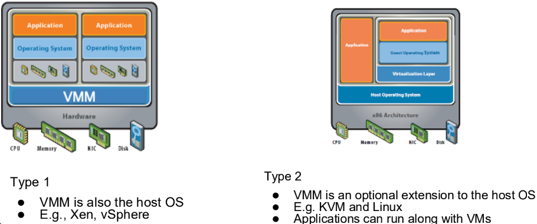
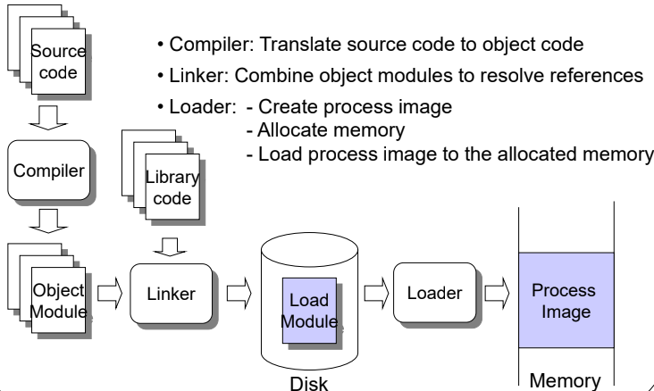
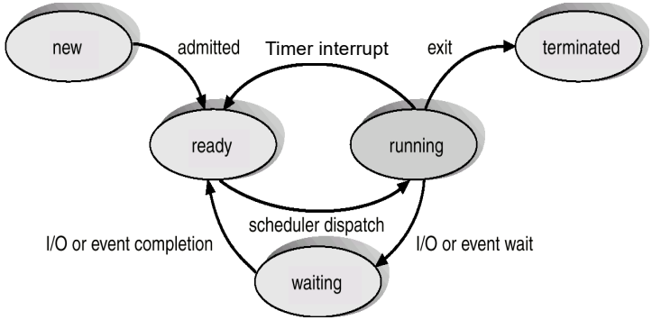
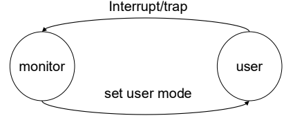
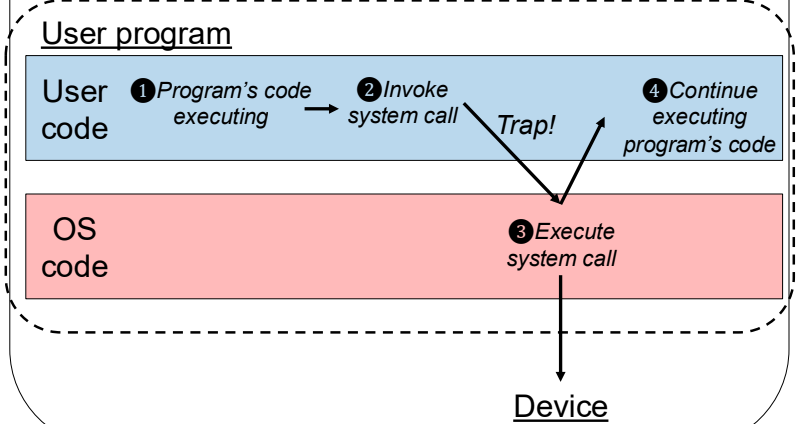

This was written entirely with AI.
Part 0: The Environment, Two Shells, and Basic Tools
1. Concept First: Where Does Code Actually Run?
When you develop software on your own computer, you typically compile a program and run it directly on your operating system (such as Windows, macOS, or Ubuntu). In this course, we study how an operating system is built from the inside out.
Because we cannot easily wipe your personal computer to install our teaching operating system, we use emulation:
- Host Operating System (Linux VM): The Linux machine you log into. It
has its own files, its own terminal prompt (
host$), and standard Linux development tools likegcc,git, andmake. - Hardware Emulator (QEMU): A software program running on the Linux host that pretends to be physical computer hardware. It simulates a complete RISC-V computer: a CPU, physical memory (RAM), a storage disk, and a serial keyboard/screen console.
- Guest Operating System (xv6): A small Unix-like teaching operating
system. It runs inside QEMU. When xv6 boots up, it presents its own
shell prompt (
xv6$).

Figure 1: Type 1 vs. Type 2 Hypervisor Architectures (Lecture 6b, Slide 1.22). Notice the Type 2 model on the right: the Host Operating System runs directly on hardware, while QEMU runs as an application process inside the host OS to host the Guest Operating System (xv6).
2. Terminal Essentials & Command vs. Argument
A terminal command line begins with an executable program name,
followed by optional parameters called arguments. For example, in
cat README.md, cat is the program, and
README.md is an argument passed to that program.
Key navigation commands:
pwd: Print the current working directory.ls: List directory contents.cd <dir>: Change working directory.cd ..moves up to the parent directory.cat <file>: Print the file content to standard output.Tab: Requests shell auto-completion for commands or file paths.Up Arrow: Recalls previously executed commands from shell history.
3. What You Do in the Lab
- Distinguish the Two Prompts:
host$commands run on your Linux system (e.g.,pwd,cd,make qemu).xv6$commands run inside the simulated xv6 operating system (e.g.,ls,cat README,forktest).- Commands on Linux (such as tab auto-completion) do not exist in xv6 unless someone programmed them into xv6.
- Host Directory vs. xv6 File System:
- In the host repository, you see
README.md. - Inside xv6, the file is named
README. - The host and xv6 do not share a current working directory or a shell environment.
- In the host repository, you see
- Interrupting vs. Exiting:
- Running
sleep 30on the host waits 30 seconds. PressingCtrl-Casks the host shell to send an interrupt signal to stop the foreground program. It is an asynchronous signal, not text typed into the terminal. - Exiting the QEMU emulator entirely requires the key sequence
Ctrl-afollowed byx(holdCtrl, pressa, release both, then pressx). This halts the simulated machine and returns you tohost$.
- Running
Part 1 & Part 2: How Programs Become Commands in xv6
1. Concept First: Source Files vs. Storage Disk Images
In lecture, we learned that a process needs an executable file stored on a secondary storage device (like a hard disk) before the OS can load it into memory and execute it.
- Source Code: Text written in C (e.g.,
user/pingpong.c). A computer CPU cannot execute text files directly. - Executable Binary (ELF file): Machine code instructions formatted as Executable and Linkable Format (ELF) that the RISC-V CPU understands.
- Disk Image (
fs.img): A single file on your host computer that acts as the hard disk for the simulated QEMU machine. The file system image contains formatted directories, inodes, and executable programs that xv6 can read.

Figure 2: Source Code to Memory: Compilation, Linking, and Loading Pipeline (Lecture 7, Slide 7.3). Source code passes through the compiler to become an object module, is joined with library code by the linker into a load module on disk, and is finally loaded into memory as a process image.
2. Make Targets and the Build Pipeline
The Makefile at the repository root controls the entire
compilation and packaging sequence:
make clean: Removes all previously compiled object files (*.o), generated system-call assembly stubs (user/usys.S), and the old virtual disk image (fs.img). A clean build is necessary when switching Git branches or recovering from stale generated artifacts.make qemu: Runs incremental compilation of kernel source files (kernel/*.c), compiles user programs (user/*.c), buildsfs.img, and starts the QEMU emulator running the compiled kernel image.
The exact build path for a user command like
pingpong:
- Compiling: The host cross-compiler
(
riscv64-unknown-elf-gcc) compilesuser/pingpong.cinto an unlinked object module (user/pingpong.o). - Linking: The linker (
ld) linksuser/pingpong.owith xv6 user runtime files (user/ulib.o,user/usys.o,user/printf.o,user/umalloc.o) to create the standalone executable load moduleuser/_pingpong. - Packaging via
UPROGS: InMakefile, the macroUPROGSdefines the exact list of user binaries to include in the disk image. An entry_$*(such as_pingpong) must be present in this list. - Formatting
fs.img: The targetfs.imginvokes a host C program calledmkfs.mkfsreads all binaries declared inUPROGS, formats an empty file system containing a root directory, assigns inodes, and copies the executables into the image data blocks. - Shell Invocation: When you type
pingponginxv6$, the shell issues anopen()system call forpingpong, finds its inode onfs.img, and executes it usingexec(). If_pingpongis absent fromUPROGS,fs.imgcontains no inode for it, causing the shell to print an execution error even thoughuser/pingpong.cexists on your host disk.
3. Baseline Verification Programs
Before modifying code, xv6 includes built-in verification programs:
forktest: Stresses the process allocation table by repeatedly callingfork()to ensure slots and resources are correctly allocated and reaped. It completes with the messagefork test OK.usertests: Runs an extensive validation test suite across system calls, file systems, pipes, and memory allocation. It should complete without reporting failures.
Part 3: Process Lifecycle, States, and Zombies
1. Concept First: Process States and Termination
A process is a program currently running in memory. The operating
system tracks each process using a data structure called a Process
Control Block (PCB). In xv6, this structure is named
struct proc.
The lecture defines five classic process states:
- New: The process is being created. In xv6, this is initialized
through
UNUSEDandUSED. - Ready: The process is ready to run, but waiting for the CPU to be
assigned. In xv6, this is called
RUNNABLE. - Running: Instructions are actively executing on the CPU. In xv6,
this is called
RUNNING. - Waiting: The process is waiting for an event or I/O operation (like
disk or keyboard input) to finish. In xv6, this is called
SLEEPING. - Terminated: The process has finished running. In xv6, this is called
ZOMBIE.

Figure 3: Five-State Process Lifecycle Model (Lecture 2, Slide 2.6). Shows how processes transition between new, ready, running, waiting, and terminated states driven by admissions, scheduler dispatches, timer interrupts, I/O waits/completions, and exits.
2. Process Creation:
fork()
A parent process creates a new child process by calling
fork().
fork()creates an exact duplicate copy of the parent process’s memory (text, data, heap, stack) and copies its open file descriptor table.- Return Convention of
fork():- In the parent process,
fork()returns the child’s positive Process ID (pid > 0). - In the child process,
fork()returns0. - If the process table is full or memory cannot be allocated,
fork()returns-1.
- In the parent process,
3. What is a Zombie Process, and Why Does It Exist?
When a process calls exit(int status):
exit()closes all open files, reparents any orphaned children to theinitprocess, wakes up its parent sleeping onwait(), and frees user virtual memory pages.- The operating system cannot free the process’s entry in
proc[]or its kernel stack immediately. The process is currently executing kernel code on that stack, and its parent may need to inspect thestatusreturn value. - Therefore,
exit()transitions the process state toZOMBIE. - The process remains a zombie until its parent calls
wait(&status). - The
wait()call searchesproc[]for a child in stateZOMBIE, reads its exit status, frees the child’s kernel stack, zeroes out its PCB fields, and transitionsp->state = UNUSED. This deallocation step is called reaping.
4. What You Do in the Lab
- Inspecting
user/zombie.c: The child exits immediately, while the parent callssleep(5). In xv6,sleep(n)measures time in timer clock ticks, not real-world seconds. - Modifying the Observation Window: Changing
sleep(5)tosleep(100)extends the parent’s sleep period, providing enough time to inspect the process table. - Observing via
Ctrl-p: When you runzombieand pressCtrl-pon the console, the keyboard interrupt handler callsprocdump()inkernel/proc.c. It prints the active process list:- During the sleep window, you see the child process explicitly listed
with state
zombie. - After the parent wakes up, calls
wait(), and exits, pressingCtrl-pshows that the child has been reaped and its slot returned toUNUSED.
- During the sleep window, you see the child process explicitly listed
with state
Part 4:
Trapping into the Kernel & Adding getproccount()
1. Concept First: Dual-Mode Operation and the Privilege Boundary
Modern CPUs protect computer memory and hardware devices using Dual-Mode Operation:
- User Mode (U-Mode): Applications execute here. The CPU prevents code in User Mode from executing dangerous instructions (such as disabling interrupts or modifying page tables).
- Kernel/Supervisor Mode (S-Mode): Operating system kernel code executes here with full hardware privileges.
A user program cannot read the kernel’s process list directly. Doing so would violate memory protection. If a user program wants to know how many processes exist, it must ask the kernel to count them on its behalf using a system call.

Figure 4: Dual-Mode Operation State Transition (Lecture 1, Slide 1.33). Shows the mode bit flipping between user mode (1) and monitor/kernel mode (0) via an interrupt/trap and returning via set user mode.

Figure 5: User to Kernel Mode System Call Trap Processing (Lecture 1, Slide 1.43). The 4-step sequence: (1) user code executes, (2) invokes system call triggering a trap, (3) OS executes the privileged handler, and (4) execution resumes in user code.
2. End-to-End System Call
Trace: getpid()
Tracing getpid() reveals how a system call transitions
across user and kernel space:
User Prototype (
user/user.h):int getpid(void);Build-Time Stub Generator (
user/usys.pl): A Perl script on the host readsentry("getpid");and generates the assembly fileuser/usys.S. The fileuser/usys.Sis generated at build time; developers edituser/usys.pl, notuser/usys.S.User Assembly Stub (
user/usys.S):.global getpid getpid: li a7, SYS_getpid # Place syscall number 11 into register a7 ecall # Hardware trap to Supervisor Mode ret # Return to caller; return value is in a0Privilege Transition (
ecall): Theecallinstruction raises an environment exception. The CPU mode bit changes from 1 (User) to 0 (Supervisor), and hardware jumps to the address in registerstvec, which points touservecinkernel/trampoline.S.Trap Vector (
kernel/trampoline.S):uservecswitches to the process’s kernel stack and saves all 32 user registers intop->trapframe.Common Trap Handler (
kernel/trap.c):usertrap()readsr_scause(). Value8indicates an environment call from user mode. It advances the saved program counter past the 4-byteecallinstruction:p->trapframe->epc += 4;If omitted, returning to user mode would execute
ecallagain, trapping forever. It then invokessyscall().System Call Dispatcher (
kernel/syscall.c):syscall()readsnum = p->trapframe->a7. It usesnumto index into the dispatch arraysyscalls[num]()and callssys_getpid().Kernel Handler (
kernel/sysproc.c):sys_getpid()executes:uint64 sys_getpid(void) { return myproc()->pid; }Return Path:
syscall()saves the handler’s return value intop->trapframe->a0. Control passes throughusertrapret()touserretinkernel/trampoline.S.userretrestores user registers fromtrapframeand executessret, switching back to User Mode with the return value available ina0.
3. Adding the
getproccount() System Call
Contract Specification:
- Interface:
int getproccount(void); - Contract: Returns the total number of process-table entries whose
state is not
UNUSEDat the instant of inspection. This counts entries inUSED,SLEEPING,RUNNABLE,RUNNING, andZOMBIEstates.
Implementation Mapping:
kernel/syscall.h(Edit): Define unique system call identifier:#define SYS_getproccount 22user/user.h(Edit): Declare the user-facing prototype:int getproccount(void);user/usys.pl(Edit): Add entry generation rule:entry("getproccount");kernel/syscall.c(Edit): Declare external prototype and add entry to dispatch table:extern uint64 sys_getproccount(void); [SYS_getproccount] sys_getproccount,kernel/sysproc.c(Edit): Implement kernel counting logic:uint64 sys_getproccount(void) { struct proc *p; int count = 0; for (p = proc; p < &proc[NPROC]; p++) { acquire(&p->lock); if (p->state != UNUSED) { count++; } release(&p->lock); } return count; }user/proccount.c(Create): User test program that callsgetproccount(), prints the integer result usingprintf(), and exits.Makefile(Edit): Add$U/_proccounttoUPROGSsomkfsincludes it infs.img.kernel/trap.candkernel/trampoline.S(Inspect Only): Part of the generic trap handling path; no modifications are required because dispatching is handled throughsyscall.c.
4. Why proccount
Differs from Ctrl-p
- Pressing
Ctrl-prunsprocdump()directly inside the existing kernel via a console keyboard interrupt handler. No new process is created. - Running the user program
proccountrequires the xv6 shell to executefork()andexec(), which allocates an active process slot forproccountitself. Consequently,proccountreports an active count that is at least 1 higher than the snapshot seen from an idle shell.
Part 5: Inter-Process Communication with Pipes
1. Concept First: What is a Pipe?
Processes have isolated memory spaces. Process A cannot read variables inside Process B. To exchange data, they must use Inter-Process Communication (IPC).
The lecture outlines two main IPC models: shared memory and message passing. A Unix pipe is a form of message passing implemented using an indirect, bounded buffer managed by the operating system kernel:
- A pipe is unidirectional: data flows in one direction only.
- Calling
pipe(int p[2])creates a kernel buffer and returns two file descriptors:p[0]: The read end of the pipe.p[1]: The write end of the pipe.
2. Kernel Architecture of Pipes
Relevant kernel files:
kernel/pipe.c: Implements the pipe structure (struct pipe), which contains a circular data buffer of 512 bytes (PIPESIZE), read/write byte offsets (nread,nwrite), and boolean flags indicating whether the read and write endpoints remain open (readopen,writeopen). Access to this buffer is protected by a sleep-lock.kernel/sysfile.c: Implementssys_pipe(), which allocates two unused file descriptors in the process’sofile[]array and maps them to the underlying kernel pipe.kernel/file.c: Implementsfiledup()(increments file reference counts) andfileclose()(decrements reference counts and releases the pipe when counts reach zero).
3.
Descriptor Lifetime Across fork() and Reference
Counting
When fork() runs, the child inherits duplicate copies of
the parent’s file descriptors. Both descriptors point to the same
underlying kernel file objects, where reference counts are incremented
by filedup().
Immediately after creating a pipe and calling
fork():
- The pipe’s read endpoint has 2 open references (one in parent, one in child).
- The pipe’s write endpoint has 2 open references (one in parent, one in child).
Closing a file descriptor via close(fd) only decrements
the reference count for that open file object. The underlying pipe
endpoint is destroyed only when the reference count drops to zero.
4. Rules of Pipe Endpoints and EOF
- End-of-File (EOF) Rule: A process calling
read()on an empty pipe will block (sleep) waiting for data as long as at least one write descriptor referencing that pipe remains open anywhere in the system.read()returns0(EOF) only when the buffer is empty and every write descriptor across all processes has been closed.- Trap: If a reading process fails to close its own inherited write
descriptor, the write reference count never drops to zero. If the buffer
is empty,
read()will block forever, deadlocking on input from itself.
- Trap: If a reading process fails to close its own inherited write
descriptor, the write reference count never drops to zero. If the buffer
is empty,
- Broken Pipe Rule: Calling
write()on a pipe where all read descriptors have been closed returns-1, indicating an error because no readers exist to consume the stream.
5.
Implementing Bidirectional Communication
(user/two_pipes.c)
Because a single pipe is unidirectional, bidirectional request-reply communication requires two separate pipes:
p2c(Parent-to-Child pipe): Parent writes, Child reads.c2p(Child-to-Parent pipe): Child writes, Parent reads.
Message Exchange Specification:
- Parent writes
"ping"intop2c[1]. - Child reads
"ping"fromp2c[0], prints<child-pid>: received ping\n, and writes"pong"intoc2p[1]. - Parent reads
"pong"fromc2p[0], prints<parent-pid>: received pong\n, callswait(0)to reap the child, and exits. - Execution Invariant: The child process must receive
"ping"before the parent receives"pong".
Endpoint Ownership Plan:
- Parent Process:
- Uses:
p2c[1](write) andc2p[0](read). - Closes immediately after
fork():p2c[0](does not read fromp2c) andc2p[1](does not write toc2p).
- Uses:
- Child Process:
- Uses:
p2c[0](read) andc2p[1](write). - Closes immediately after
fork():p2c[1](does not write top2c) andc2p[0](does not read fromc2p).
- Uses:
Lab 1 Self-Check & Quiz Traps
- Why does adding a
.cfile touser/not make it a command in xv6? xv6 executes programs stored in its virtual disk image (fs.img). The C file must be compiled into a RISC-V ELF executable and listed inUPROGSinsideMakefileso thatmkfsincludes it in the root directory offs.img. - What does the generated system-call stub place in register
a7, and what instruction enters the kernel? The stub places the unique system call number (SYS_name) into registera7. Theecallassembly instruction triggers the hardware trap to transition from User Mode to Supervisor Mode. - Why does
getproccount()return a different value from pressingCtrl-p? PressingCtrl-pinvokesprocdump()directly inside the kernel via a console interrupt, inspecting the table without spawning a process. Runningproccountrequires the shell tofork()andexec()a new process, soproccountcounts itself as an active process. - Why does closing one post-fork descriptor not close the underlying
pipe endpoint? Descriptors index into process-local tables pointing to
shared kernel file objects.
fork()increments their reference counts viafiledup(). Closing one descriptor only decrements that count; the pipe endpoint remains active until all processes holding a descriptor reference close it. - What result distinguishes pipe EOF from a pipe write with no
readers? A
read()on an empty pipe returns0(EOF) when all write endpoints are closed. Awrite()on a pipe where all read endpoints are closed fails and returns-1. - Which file is generated during the build, and which file should you
edit to add a system call stub?
user/usys.Sis generated automatically during compilation. You should edituser/usys.pl, which contains the generation rules used to produceuser/usys.S. - Why doesn’t the generic trap handler need modification when adding a
system call?
kernel/trampoline.S(uservec) andkernel/trap.c(usertrap()) implement a uniform trap handling interface for all system calls. Dispatching to individual system call implementations is decoupled and handled entirely by indexing into thesyscalls[]function pointer table inkernel/syscall.c.